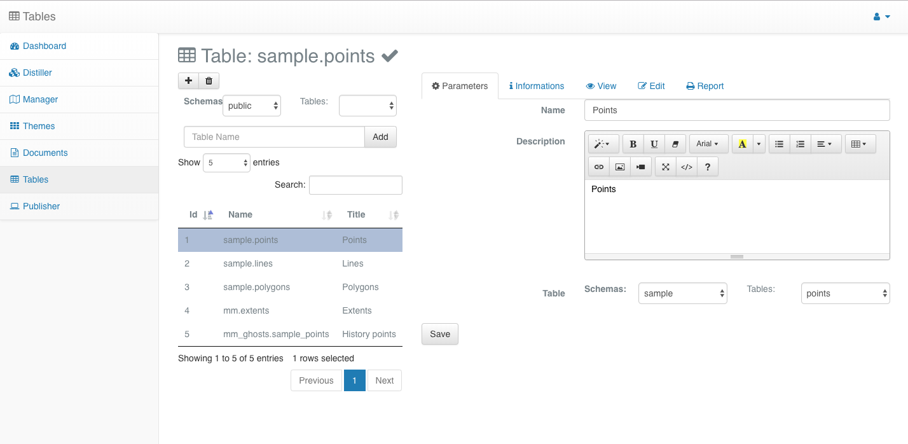
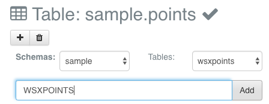
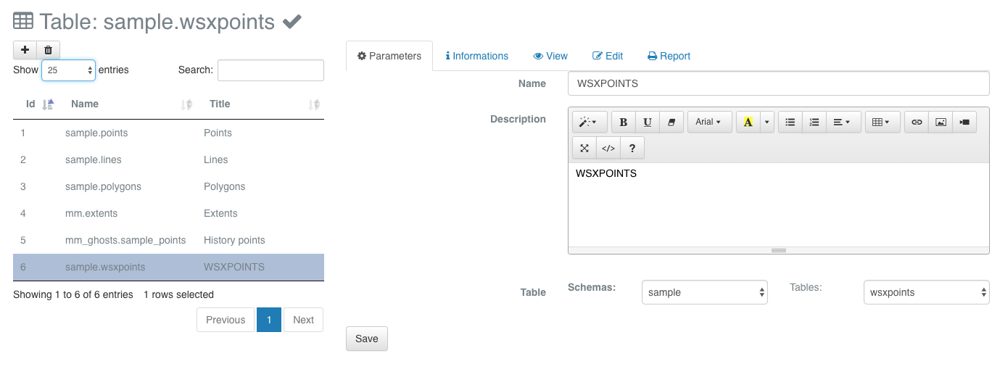
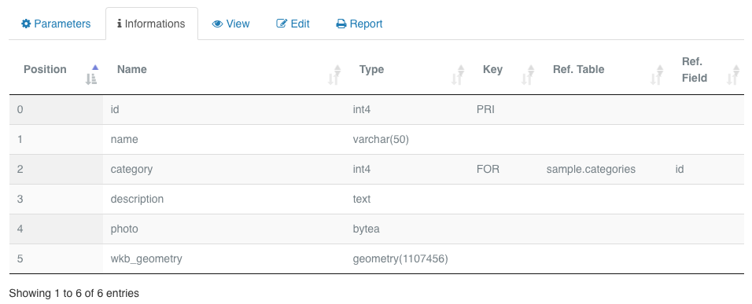
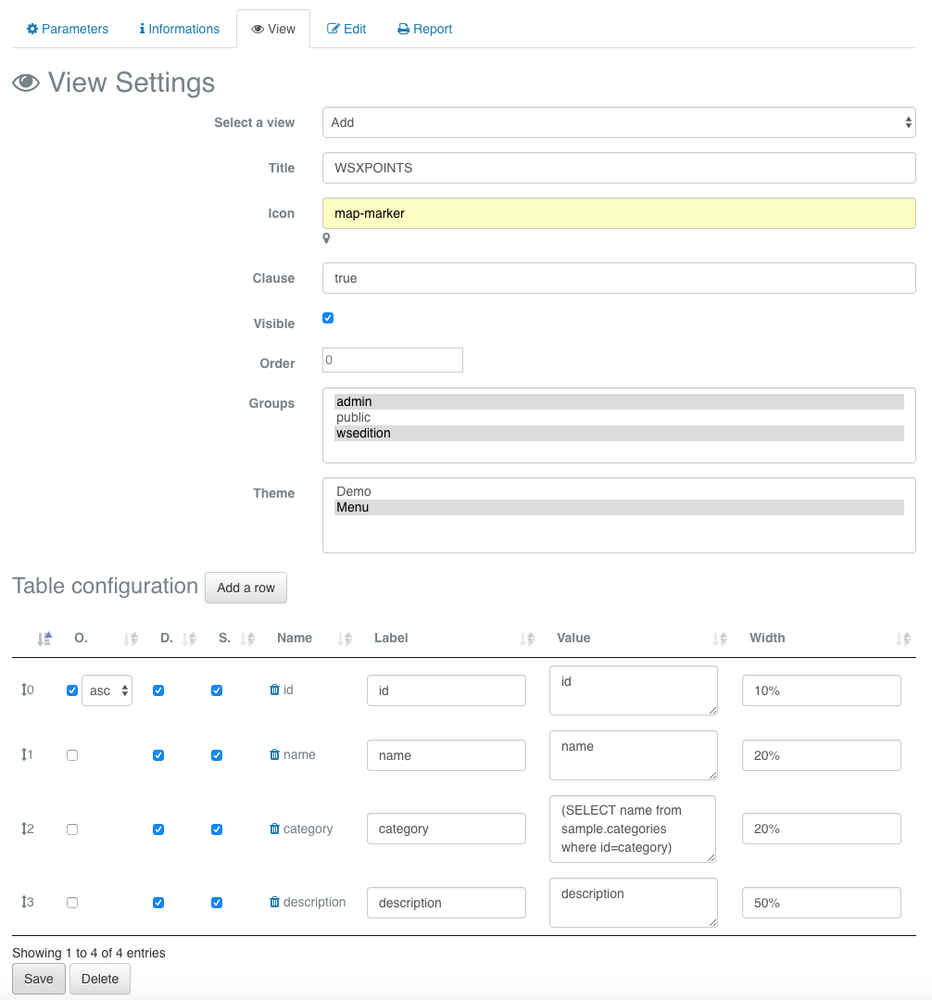
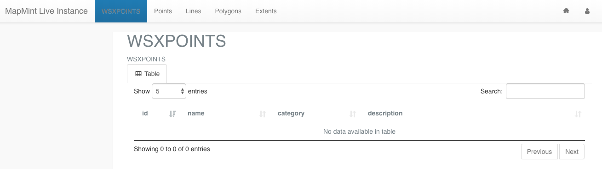
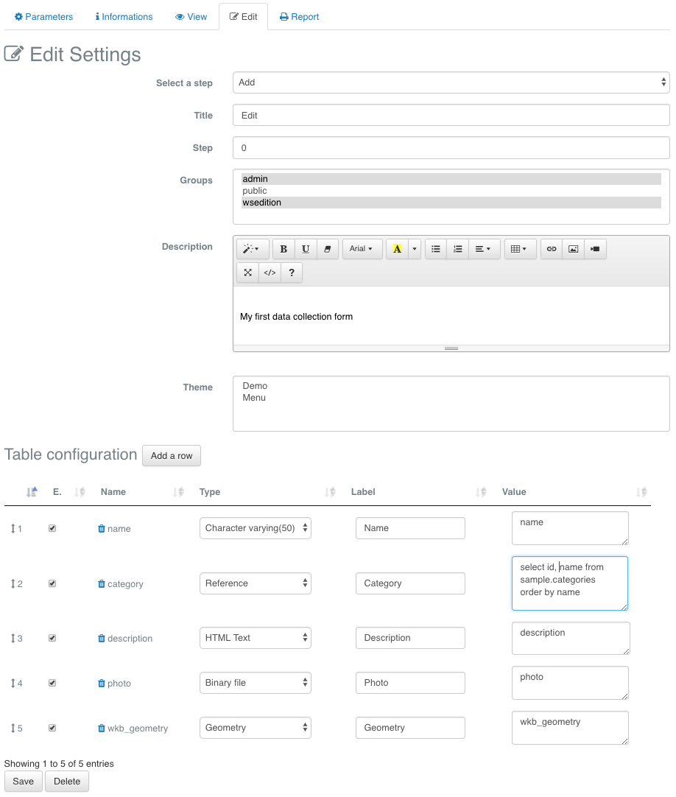
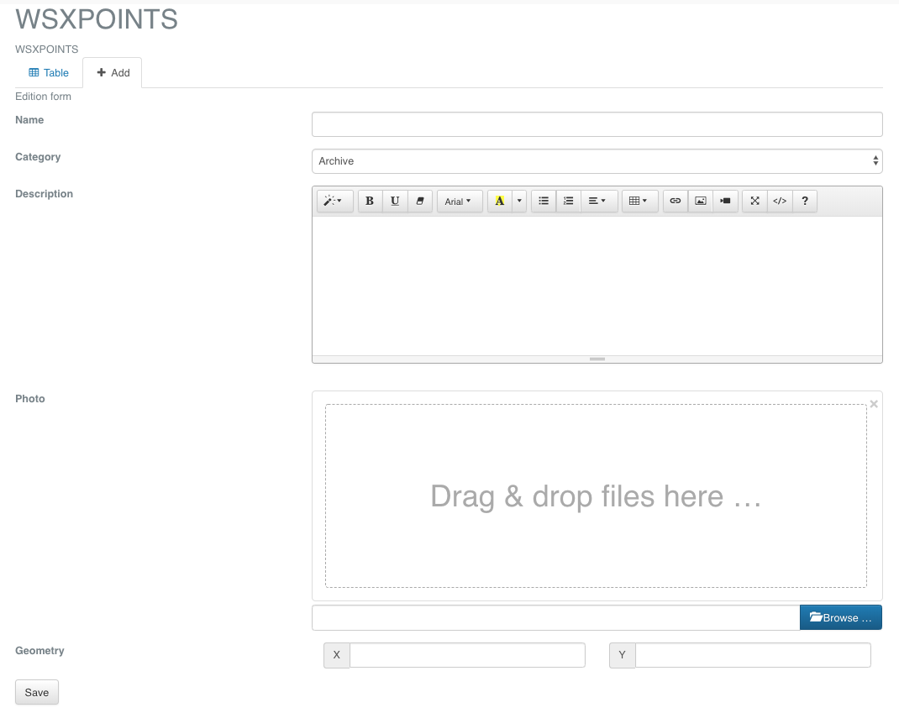

The Table modules¶
Overview of the adminstrative interface¶
For being able to access to the Table administrative module from your
MapMint installation, you need to edit the main.cfg configuration
file of the ZOO-Kernel used by your MapMnit instance for setting the
value of the tables parameter available in the [mm] section to
true.
The table administration module is accessible through the following URL: https://demo.mapmint.com/ui/Tables_bs. It gives you access to every table stored in the MapMint database and makes you able to configure them as editable by end-users of the application.
The Table administrative interface contains two distinct parts. On the left part, you get a toolbar to start a new table configuration and, below, a list of configured tables. On the right part, the multiple tabs give access to the various forms required for configuring a table in MapMint. We will detail all these configuration parameters.
{kind=link}
Create your first form¶
In this section you will be introduced to the table configuration parameters. We have tried to be exhaustive in defining supported types and options you can use with every types. Nevertheless, you will use only a simple subset of all the options available in the module.
Table configuration¶
Click on the add button from the toolbar to access the form for table configruation creation. Fro here, select the table named wsxpoints located in the sample schema and set WSXPOINTS as the table name. Then, press the add button on the right of the table name you just set.
{kind=link}
As shown below, the page should now show the table configuration you have created.
{kind=link}
Using the first tab, you can define basic informations about your table: the name displayed in the administration interface, the description that will be displayed in pages presenting your data online and the table you linked the configuration with.
As presented bellow, the second tab give you basic informations about the current structure of the table you are configuring.
{kind=link}
You can find below a description of all the displayed columns.
Column |
Description |
|---|---|
Position |
the column position (starting at 0) |
Name |
the column name |
Type |
the column type |
Key |
the kind of key (if any) |
Ref. Table |
the referenced table (if any) |
Ref. Field |
the referenced column (if any) |
View¶
As presented below, the View tab makes you able to define how the table should be displayed, meaning which fields should be available in the listing when presenting your data online. For your wsxpoints table it looks resonable to show to the end-user the following collumns: id, name, category and description.
{kind=link}
Hence, you will start by adding a new view to your table configuration. Below, you can find the description of all the parameters you can set for a view.
Parameter |
Description |
|---|---|
Title |
the title used for the view when accessing online or from the MapMint4ME application |
Icon |
the icon (specific use) |
Clause |
the SQL condition (true if no condition should be applied) |
Visible |
define if the view should be accessible |
Order |
the position in the menu |
Groups |
the MapMint groups allowed to access the view |
Theme |
the Theme in which the view should be accessed |
In the section Table configuration, you can define for every column the following parameters.
Parameter |
Description |
|---|---|
O. |
checked in case you want to use this column to order tuples |
D. |
checked in case you want the column to be shown |
S. |
checked in case you want to use the column to search |
Name |
the column alias |
Label |
the name displayed on the top row where value for this column will be displayed |
Value |
the value displayed for this column |
Width |
the width of the column in the HTML table |
Now, you will entitle your view as “WSXPOINT”, set map-marker as the icon, define the clause as true, check the visible parameter, set 0 for order, allow admin and wsedition groups to access the view and affect it to the Menu theme.
Remove all uneeded columns from the view by clicking on the trash icon near by the photo and wkb_geometry column names. Now, only the 4 columns you have decided to keep should remain listed.
You will keep ordering your data using the id column but you will choose desc to get the latest element available the firs int the list.
You will also edit the category value and set the following:
(SELECT name from sample.categories where sample.categories.id=category)
Once you have made all these configurations, you have to click on the save button at the bottom left, right after the table showing column settings.
At this step, your table view should already be available from the Table client module, you can verify by accessing the following URL: https://demo.mapmint.com/ui/public/tables/. On top of the page, in the menu, you should see the name of you view. If you click on the item from the menu, you should then get access to a page similar to the screenshot below.
{kind=link}
Edit¶
You can click on the Edit tab to access the settings of your form, the page should like the following screenshot.
{kind=link}
You can find below the list of all parameters.
Parameter |
Description |
|---|---|
Title |
the title used to entitle the tab |
Step |
the edition form can contain multiple steps (special values: -1 search, -2 delete, -10 history) |
Groups |
the MapMint groups allowed to access the edition form |
Description |
the description displayed on top of the online edition form |
Theme |
the Theme in which the edition form should be accessed from (optional) |
In the section Table configuration, you can define for every column the following parameters.
Parameter |
Description |
|---|---|
E. |
checked in case you want the user to see this field in the form |
Name |
the column alias |
Type |
the type of the field (see below for a list of available MapMint types), |
Label |
the name displayed in the edition form |
Value |
the default value or a SQL query to fill a select list for instance |
Column types¶
Basic column types¶
We call the basic column types, the types that does not require any specific settings. You can find below the list of available basic column types.
Binary file: Photo / image
Boolean: boolean value (true or false)
Character varying (255): string of maximum 255 characters
Character varying (50): string of maximum 50 characters
Character varying (25): string of maximum 25 characters
Date: date
Date and time: date and time
Geometry: geographic object
HTML Text: HTML content
Password: password
Text: string without limitation in number of characters
Complex column types¶
Reference¶
This type is used in case you want to display a selection list to the user to set the value of the column. It is commonly used in case you want to let the user set the value of a column which is a foreign key, so a value refering to another table column.
For this type, the value parameter contains only a SQL query which should return a set of two columns. The first one will be used to set the value for this column when the second one will be shown to the user in the selection list.
Note
This type can be used even if there is no table referenced, the only requirement is that your SQL query should return a set of elements with 2 columns. So, for instance, the following query would be valid: :: – Select list: “North”, “South”, “Est”, “West” SELECT * from (
SELECT ‘N’ as id, ‘North’ as name UNION SELECT ‘E’ as id, ‘Est’ as name UNION SELECT ‘W’ as id,’West’ as name UNION SELECT ‘S’ as id,’South’ as name
) as f
In this case, the value
N,E,WorSwill be inserted in the table and in the selection list, user will see the following values:North,Est,West, andSouth.
With this reference type you are allowed to define dependencies with other field in the current edition form. For defining such a relationship between edition fields, you should use the text area in the Type column just below the type definition. A typical use case for this relationship is the case when you should first select a country, then a region in this country and so on.
The syntaxe to use for defining a relationship with another edition field is the following:
[{"XX":{"tfield":"YY","init":"true","display": "always","operator":"=","options":[]}}]
- Where:
XXis the name of the dependent field available in the current edition formYYthe column name of the table used in theXXvalue definition
In case you want to make the edition field a final selection list, so
for instance the city in the example used before with admintrative
boundaries but, you do not want to store every columns (country,
region…) in your table. then you can set XX as myself and use a
slightly different syntaxe. Below is an example we used fo selecting
species in a form by first selecting a familly, then a kind to finally
select the species.
[{
"myself":
[
{
"fid":
{
"tfield":"fkey",
"init":"true",
"display": "always",
"operator":"=",
"options":[],
"label": "Famille",
"sql_query": "SELECT id, famille from public.familles",
"dependents": [
{
"gid":
{
"tfield":"fkey",
"tfieldf":"gid",
"init":"true",
"display": "always",
"operator":"=",
"options":[],
"label": "Genre",
"sql_query": "SELECT id, genre from public.genres"
}
}
]
}
}
]
}]
Accessorily, you can use this type to show or hide a simple field. For instance, suppose you have a selection list in which the value other is available (corresponding to the 69 value) and you get an edition field named other_text. Then you may decide to show the second field only when the other has been selected. In such case the dependencies will be displayed like in the following.
[{
"other_text":
{
"tfield":"none",
"init":"true",
"display":"always",
"operator":"=",
"options":[69]
}
}]
Linked table¶
The linked table type is used when you want to give the privilege to editors to edit elements from another table that will be linked to the current edited table. A typical use case is when you are creating polygons representing parcels, then you allocate every building in it.
- The sytaxe is the following:
XX;TBLwhere: XXis the name of the colum used to store the foreign key (corresponding to the current table primary key) in thre target tableTBLis the table name you want to use to view and edit the elements.
Warning
It is important at this step that the TBL table get a view and
edition forms already defined.
Table link¶
The table link type is used when you want to give the capability to the editor to edit a field that can take multiple values which can be found in another table. Usually, these links are stored in a different table from the one you are configuring, and the table get at least two columns, one refereing to the current table and the other one refering the table where the value to be linked can be found.
- The syntaxe for this type is the following:
XX;YY;TBL;SQLwhere: XXis the column name to store the reference to the current tableYYis the column name to store the selected vakyes,TBLis the name of the table to store the informations,SQLis the SQL query returning elements that can be linked to the current table
Your settings¶
Now you know every basic and complexe column types that can be defined from the edition form settings pannel, it is time to go back on the form you are targetting which has been presented in introduction.
You will remove the id column, as it is a serial (meaning an autoincremented integer value) it will be set by the database itself. You will keep the name column and define its type as Character varying (50). For the category column you define it as Reference and set the value to the following SQL query:
select id, name from sample.categories order by name
Then, you will set the type for photo and description column as Binary file and Geometry respectively. To save your settings, you should click on the save button below the table configuration.
Once you click on the save button for the very first time, you should know that the MapMint Table module creates a history table in the mm_ghosts scheme which will be used to store the full history of every modification that will be applied to the elements in your table. This way, in case you removed an elements by mistake for instance, you will be able to find it back from the history table. It also permits to have a detailled view of when and what has been updated and by whom.
Now that you have created a step 0 for your table, if you go back on the MapMint table client module, you shoud see a tab appearing and in its pannel, the form you have just created. The result you should get is presented in the screeshot below.
{kind=link}
Conclusion¶
At this step, you have configured everything on the server side for being able to connect from the MapMint4ME Android application to prepare your data collection mission.
In the next step, you will see how to setup MapMint4ME application on your Android phone or tablet, then you will configure it to get it ready for data collection on the field.